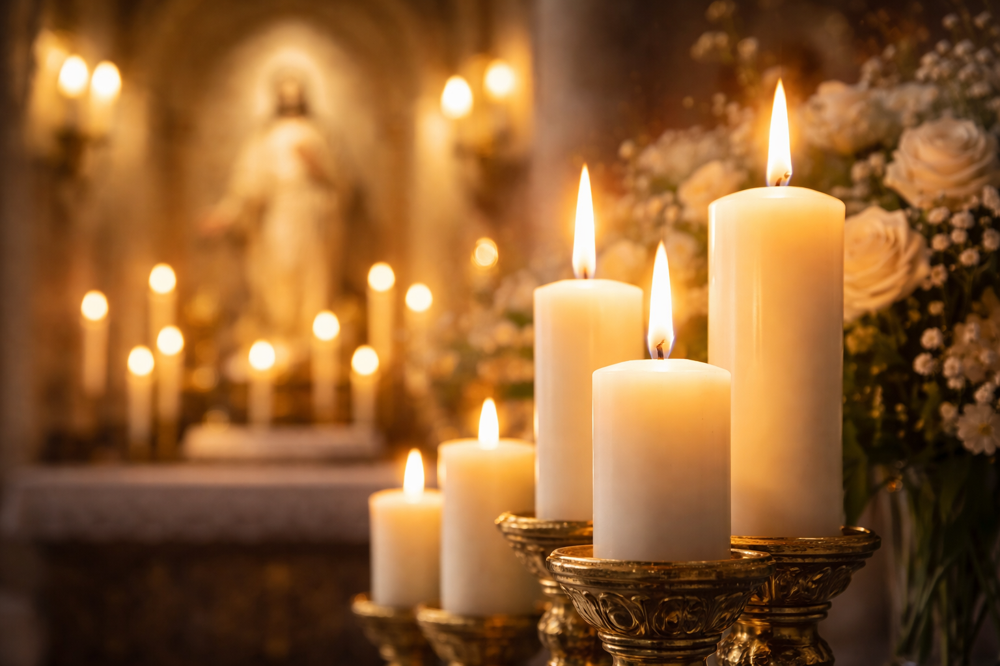

O Significado da Vela na Liturgia Católica: Cristo, a Luz do Mundo
Desde os primeiros séculos do cristianismo, as velas ocupam um lugar de destaque na liturgia e na devoção católica. Elas não servem apenas para iluminar o ambiente, mas são carregadas de um simbolismo teológico profundo. A vela representa Cristo, a "Luz do Mundo", que dissipa as trevas do pecado e da morte. Acender uma vela é um ato de fé, uma oração que se prolonga no tempo e um sinal da nossa entrega a Deus.
O Simbolismo da Vela: Cera, Pavio e Chama
Os antigos teólogos viam na vela uma imagem da própria vida de Cristo e do cristão:
- A Cera: Representa a humanidade de Cristo, nascida da Virgem Maria (simbolizada pela abelha, que produz a cera pura).
- O Pavio: Representa a alma de Cristo, escondida em Sua humanidade.
- A Chama: Representa a divindade de Cristo, que ilumina e aquece o mundo.
Assim como a vela se consome para dar luz, Cristo se consumiu na Cruz por amor a nós. Da mesma forma, o cristão é chamado a "consumir-se" no serviço a Deus e aos irmãos.
"Eu sou a luz do mundo; quem me segue não andará nas trevas, mas terá a luz da vida." (João 8, 12)
As Velas nos Momentos Principais da Fé
A vela acompanha o católico do nascimento à eternidade:
- No Batismo: A vela acesa no Círio Pascal simboliza que o batizado foi iluminado por Cristo e deve manter a chama da fé acesa até o fim.
- Na Missa: As velas sobre o altar indicam que ali se celebra um banquete sagrado e que Cristo, a Luz, está presente.
- No Círio Pascal: É a vela mais importante, acesa na Vigília Pascal para proclamar a Ressurreição de Cristo. Dela derivam todas as outras luzes da Igreja.
- Diante dos Santos: Acendemos velas como sinal de nossa veneração e para pedir a intercessão daqueles que já vivem na luz eterna de Deus.
Por que Acendemos Velas em Oração?
Acender uma vela diante de uma imagem ou no altar é um gesto que diz: "Senhor, eu não posso ficar aqui rezando o tempo todo, mas deixo esta luz como sinal do meu desejo de estar em Tua presença". A vela que queima simboliza o nosso coração que arde de amor por Deus. É um sacrifício de louvor e uma súplica silenciosa que sobe ao céu.
A Vela não é um Amuleto
Como todo sacramental, a vela deve ser usada com fé. Acender uma vela sem oração ou sem o desejo de conversão é um gesto vazio. O poder não está na cera ou no fogo, mas na oração que o gesto representa. A vela deve nos lembrar que nós também devemos ser "luz do mundo" através de nossas boas obras.
Conclusão: Caminhar na Luz
Que cada vela que você acender seja um compromisso renovado de seguir a Jesus. Que ela dissipe as trevas do seu medo, da sua dúvida e do seu egoísmo. Que a luz de Cristo brilhe em seu rosto e em suas ações, para que todos vejam que você é um filho da luz. "Brilhe a vossa luz diante dos homens" (Mateus 5, 16).
Cristo, Luz do Mundo, iluminai os nossos passos!